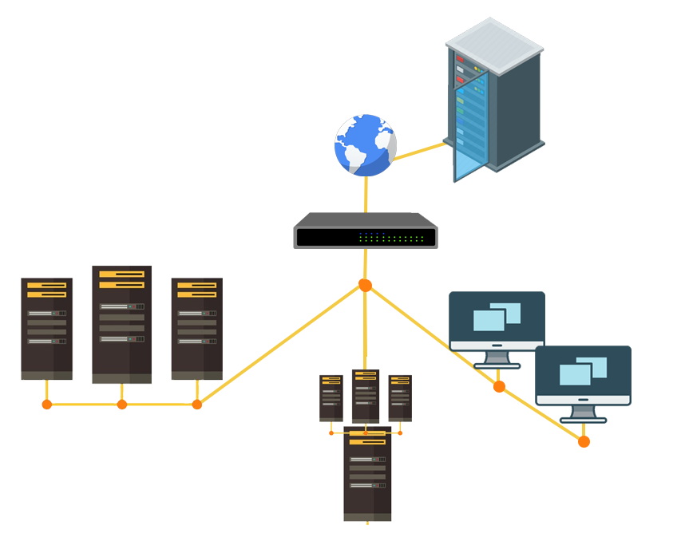

<div class="row animate-content">
  <div class="col-8 align-self-center fragment" data-autoslide="750">
    <div class="row">
      <div class="col">
        <div class="row">
          <div class="col">
            <h2>Multiple Server Management</h2>
            <ul>
              <li>Great automation tools are already avaliable.</li>
              <li>Variety of infastructure and servers can be employed.</li>
            </ul>
          </div>
        </div>
      </div>
    </div>
    <div class="row fragment fade-up push-50-t" data-autoslide="750" data-autoslide-stop>
      <div class="col">
        
      </div>
    </div>
  </div>
  <div class="col align-self-center fragment fade-left" data-autoslide="750">
    <h2 class="fragment highlight-red" data-autoslide="750" data-autoslide-stop>Problems</h2>
    <ul class="fragment highlight-green">
      <li>Monitoring capabilities are mostly paid for these tools.</li>
      <li>Multiple interfaces usually used to control different functions.</li>
      <li>Exposing internal servers directly to internet can cause security problems.</li>
    </ul>
  </div>
</div>
<aside class="notes">
 <p>I would also like to give a little pitch about multiple server management as well.</p>
 <p>For maintaining or deploying multiple servers, there are some great tools already available like Puppet, Ansible or Chef. With these tools administrators can automatically configure services from an initial unconfigured state of the server.</p>
 <p>There is also the servers itself where the services are intended to be run in. These servers can be physical servers as well as virtualized servers using tools like KVM, ESXI, Hyper-V, Proxmox or Unraid. There is a variety of selection here.</p>
 <p>These also does not have to be locally managed servers. Cloud services and automatic deployment through them is gaining traction since it is very easy to scale up applications.</p>
 <p>And the infastructure itself can be really dependent on the type of requirements.</p>
 <p>-------PUSH---------</p>
 <p>But there are also some problems that I want to touch on with those kinds of configurations.</p>
 <p>With the automated deployment tools, there is a free and a commercial which is a paid model. So monitoring tools and interfacing with it with a graphical user interface is a mostly the part of the paid version.</p>
 <p>Even though you have the paid version of these automated deployment tools, the pattern contunies here with the servers. If you are a proud owner of multiple hypervisors for virtualization, physical servers and cloud servers, you have to go through multiple interfaces to interract with them.</p>
 <p>Sometimes those interfaces come even without a mobile version. And sometimes even without a interface to interract with. So you have to do some remote SSH digging around the terminal, which is not very practical on the go and assumes that you always carry a computer with you even for the most basic tasks.</p>
 <p>Wanting to have these remote capability causes you to expose more on the internet because you might want to access it later.</p>
 <p>This brings out another problem which is exposing more than what you need and causing it to be a security concern again.</p>
 <p>Honestly I can not imagine sharing one of my hypervisors to internet so that when it gets comprimised, I random guy can break in and delete all my data very easily.</p>
 <p>--------PUSH--------</p>
 <p>So again lets keep these highlighted problems in the back of our minds again. Because it is another issues that I want to solve them in my thesis.</p>
</aside>
